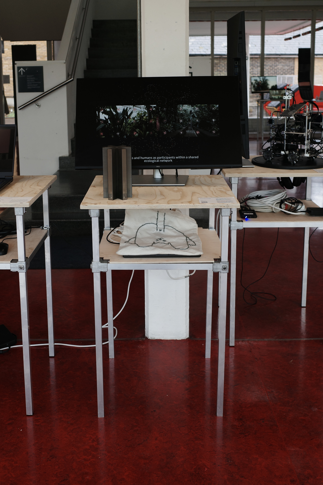
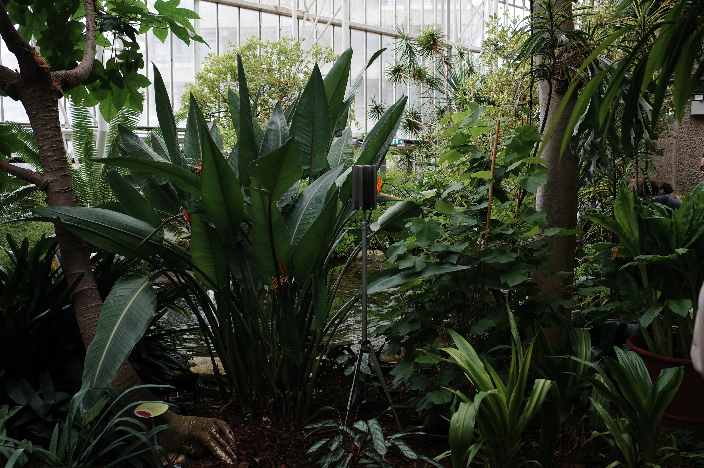
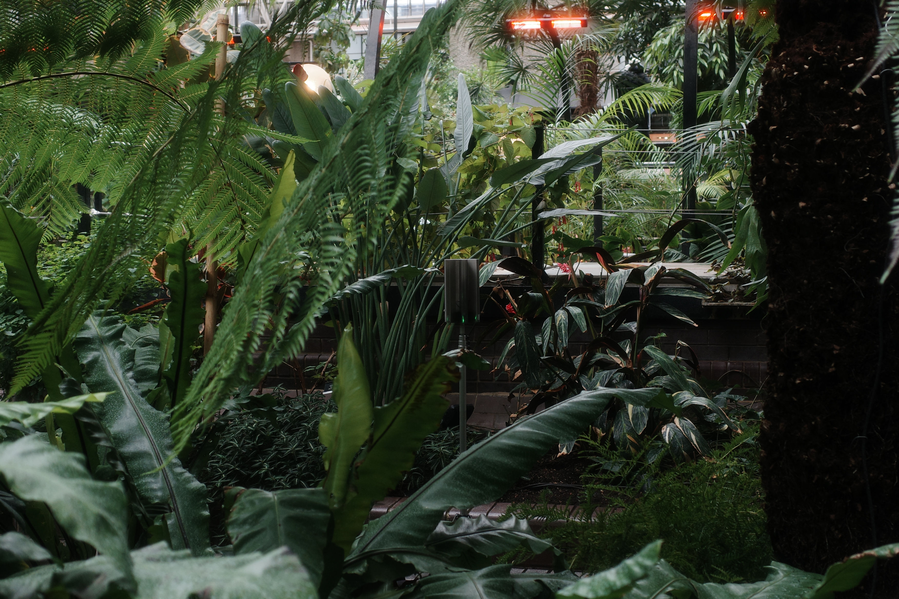
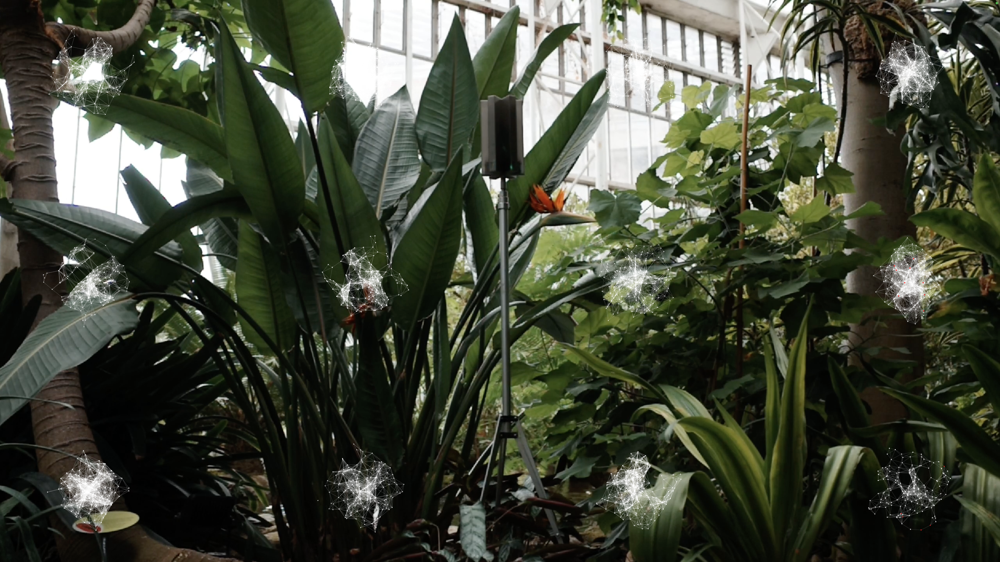
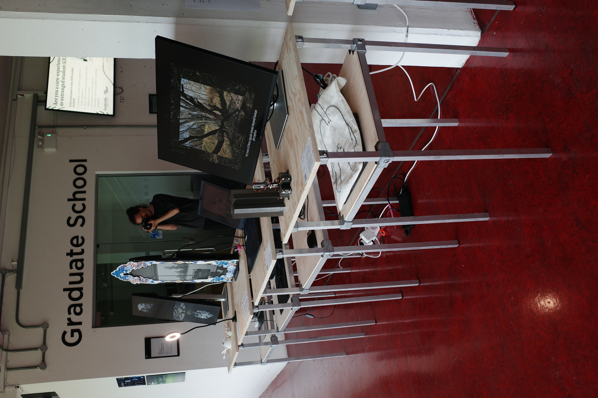

Olfaction
Plants continuously emit volatile organic compounds (VOCs) as part of their communication with surrounding environments. These signals often emerge before visible symptoms of stress, disease, or environmental change appear. This work-in-progress explores how machine sensing can reveal ecological processes beyond ordinary human perception. By capturing plant-emitted signals and translating them into generative moving images, the project investigates new forms of ecological awareness and more-than-human relationships between plants, sensors, algorithms, and observers.
Hao Wang